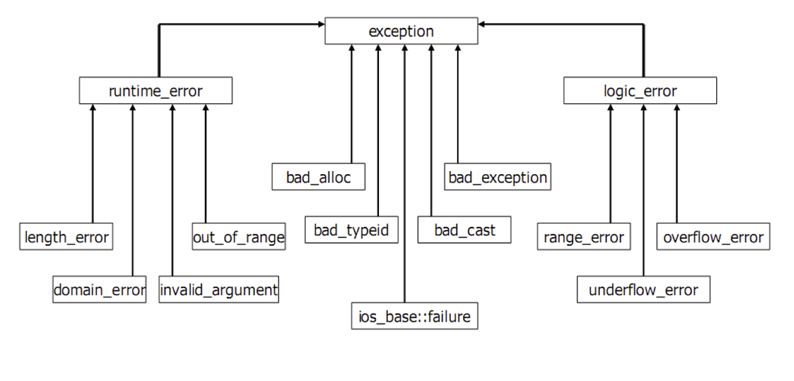

try{
// Encapsulate critical code that may cause an exception in a try block,
}catch(type name){
// Catch an exception of a given type.
}
You can throw an exception manually
throw exceptionObject;
int divide (int a, int b){
if (b == 0) {
throw 0;
}
return a/b;
}
int main (){
try {
cout << divide(10, 0);
} catch (int exception) {
cout << "Division by Zero.";
} catch (...) { // all other exceptions
cout << "An error occurred.";
}
}
throwint divide (int a, int b) throw (int){
if (b == 0) {
throw 0; // only throwing int allowed
}
return a/b;
}
int divide (int a, int b) throw (type){} // throws an exception of type
int divide (int a, int b) throw (){} // doesn't throw any exception
exceptionC++ standard library provides a base class exceptions
exception header file
stdwhat() which can be overridden (returns a null-terminated character sequence)
exceptionclass exception {
public:
exception() throw();
exception(const exception&) throw();
exception& operator=(const exception&) throw();
virtual ~exception() throw();
virtual const char* what() const throw();
private:
...
};
stdexcept library
#include <stdexcept> using namespace std;
bad_alloc is thrown
try{
int* array = new int[100];
}catch(bad_alloc&){
cout << "Error allocating memory" << endl;
}
class MyException : public exception{
int _errorCode;
public:
MyException() : exception(){
_errorCode = 0;
}
MyException(int errorCode) : exception(){
_errorCode = errorCode;
}
const char* what() throw(){
stringstream sstream;
sstream << "exception: " << m_errorCode;
string message = sstream.str();
return message.c_str();
}
}
SaveArrayclass SaveArray{
int _maxSize;
int* _array;
public:
SaveArray(int size);
int& operator[](int index);
};
class RangeException : public exception {
int _index;
public:
RangeException(int index);
const char* what() throw();
};
class SizeException : public exception {
int _size;
public:
SizeException(int size);
const char* what() throw();
};
SaveArrayRangeException::RangeException(int index) throw(){
_index = index;
}
const char* RangeException::what() const throw(){
stringstream sstream;
sstream << "range exception for index " << _index;
string message = sstream.str();
return message.c_str();
}
SizeException::SizeException(int size) throw(){
_size = size;
}
const char* SizeException::what() const throw(){
stringstream sstream;
sstream << "size exception for size " << _size;
string message = sstream.str();
return message.c_str();
}
SaveArrayImplementation of SaveArray
SaveArray::SaveArray(int size){
if(size < 0){
throw SizeException(size);
}
}
int& SaveArray::operator[](int index){
if(index < 0 || index >= _maxSize){
throw RangeException(index);
}
return _array[index];
}
SaveArraytry{
SaveArray array(10);
array[11] = 0;
}catch(RangeException& e){
cout << e.what() << endl; // range exception for index 11
}
try{
SaveArray array(-1);
}catch(SizeException& e){
throw e; // Explicitly forward to caller
}
ofstream : stream class to write to files
ifstream : stream class to read from files
fstream : stream class to both read and write from/to files
istream and
ostream<< to write data to a text file
>> to read data from a text file
fail() to check if operation was successful
/